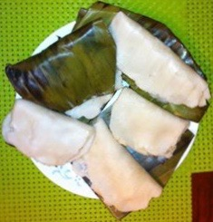

                                    <figure class="cards double">
                                        <figcaption class="caption">
                                            <h1><span style="color: rgb(26, 90, 26);"><strong>Ottada/Plantain Leaf Ada/Adai/Adye</strong></span></h1>
                                  
                                            <p><strong><u>Ingredients:</u></strong></p><ul><li>Roasted rice flour&nbsp; &nbsp; &nbsp; &nbsp; &nbsp; &nbsp; &nbsp; &nbsp; &nbsp; - 2 cups</li><li>Grated coconut&nbsp; &nbsp; &nbsp; &nbsp; &nbsp; &nbsp; &nbsp; &nbsp; &nbsp; &nbsp; &nbsp; - 2 cups</li><li>Powdered jaggery&nbsp; &nbsp; &nbsp; &nbsp; &nbsp; &nbsp; &nbsp; &nbsp; &nbsp; - 3/4 cup</li><li>Cardamom powdered&nbsp; &nbsp; &nbsp; &nbsp; &nbsp; &nbsp; &nbsp;- 2 tsps</li><li>Salt&nbsp; &nbsp; &nbsp; &nbsp; &nbsp; &nbsp; &nbsp; &nbsp; &nbsp; &nbsp; &nbsp; &nbsp; &nbsp; &nbsp; &nbsp; &nbsp; &nbsp; &nbsp; &nbsp; - as required</li><li>Boiled Water&nbsp; &nbsp; &nbsp; &nbsp; &nbsp; &nbsp; &nbsp; &nbsp; &nbsp; &nbsp; &nbsp; &nbsp; &nbsp;- as required</li><li>Plantain leaf</li></ul><p><strong><u>Cooking method:</u></strong></p><ol><li>In a bowl take the rice flour and add salt and enough boiling hot water, mixing it thoroughly with a ladle. Leave it to cool.</li><li>When it is cold enough mix the dough with hands thoroughly kneading it into a soft dough without lumps. The consistency should be softer than chapatti dough and also soft enough to spread it on the banana leaves.</li><li>Soften the plantain leaves by quickly running it on gas flame.</li><li>Cut the plantain leaves into square pieces.</li><li>In a bowl mix the coconut, jaggery and cardamom.</li><li>Make a ball of the dough, place it on the leaf and spread it evenly to the edges. Flatten it as thinly as possible. Dip your palm in water or oil so that you can spread the dough easily.</li><li>Take a spoonful or two of coconut mixture and spread it on top and fold the leaf from end to end.</li><li>Steam it in an idly cooker for about 15 minutes.</li></ol>
                                        </figcaption>
                                      
                                    </figure>
                                    